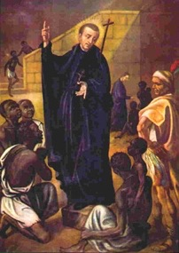

Misionari, pastiri i mistici (Pojedinačna proglašenja)
Svećenik · Misionar · Služitelj siromašnih
Sv. Petar Claver
1580. – 1654.
Na pristaništima Cartagene dočekivao je porobljene Afrikance s hranom, vodom, lijekovima i prevoditeljima. Svoje je svećeništvo posvetio ljudima kojima je trgovina robljem oduzimala slobodu, pružajući im skrb i duhovnu potporu.

Izvor slike
- Spomendan
- 9. rujna
- Zaštitništvo
- afričke misije · Afroamerikanci · misije među crncima · crnci · vanjske misije · međurasna pravednost · robovi · Kolumbija · Katoličke misije među afričkim narodima
- Životni vijek
- 1580. – 1654.
- Djelovanje
- Misije i evangelizacija · Siromašni i isključeni · Bolesnici i umirući · Radnici i društvena pravda
- Razdoblje
- 16., 17. stoljeće
- Slavi se
- 9. rujna · Neobvezni spomendan
- Liturgijski stupanj
- Neobvezni spomendan
Životopis
Kada su brodovi s porobljenim Afrikancima pristajali u Cartagenu, Petar Claver nije čekao da se ljudi oporave pa tek onda dođu do crkve. Odlazio je k njima, s hranom, vodom, lijekovima i prevoditeljima. Susretao je osobe koje je trgovina robljem pretvorila u robu, a nasljedovanje Krista za njega je počinjalo upravo ondje gdje su drugi odvraćali pogled.
Petar je rođen u Verdúu u Kataloniji oko 1580. godine. Studirao je u Barceloni, a 1602. stupio u Družbu Isusovu. Novicijat je proveo u Tarragoni. Tijekom filozofskih studija u Palmi na Mallorci susreo je brata Alfonza Rodrígueza, isusovačkoga vratara čija je jednostavna služba već tada ostavljala snažan dojam na zajednicu. Alfonz ga je poticao da razmotri misije u Novome svijetu. Mladi je isusovac prihvatio taj poziv i 1610. otputovao u Novo Kraljevstvo Granadu, područje današnje Kolumbije. Teološku je pripravu nastavio u Bogoti, a za svećenika je zaređen u Cartageni 1616.
Cartagena je bila važna luka atlantske trgovine robljem. Isusovački povijesni prikaz procjenjuje da je u Petrovo doba kroz nju godišnje prolazilo oko deset tisuća porobljenih ljudi. Na njezine su pristane stizali ljudi oteti iz svojih krajeva u Africi, nakon putovanja koje je mnogima odnijelo život. Preživjeli su bili iscrpljeni, izgladnjeli ili bolesni, a zatim prodavani za rad u španjolskim kolonijama. Brod nije bio samo mjesto njihova dolaska nego prvi prizor sustava koji im je oduzeo slobodu. Trgovina je hranila plantaže, rudnike i gradsko gospodarstvo. Ni crkvene ustanove nisu bile izvan toga poretka: isusovački izvori danas izričito priznaju da je Družba u Amerikama također držala porobljene osobe, uključujući Petrovo doba u Cartageni.
U misijskoj je službi Petar učio od isusovca Alonsa de Sandovala, koji je već radio među porobljenim Afrikancima. Uz njega i brata Nicolása Gonzáleza okupljao je suradnike koji su mogli doprijeti do ljudi različitih jezika. Prema vatikanskom životopisu, surađivao je s osamnaest tumača; među njima su bili i ljudi koji su sami nekoć bili porobljeni. Petar je naučio i jezik ljudi pristiglih iz Angole. Nosio je hranu koju je isprosio, vodu, limune, zavoje i lijekove. Silazio je u potpalublja, čistio rane, pomagao onima koji se nisu mogli ni iskrcati te pokušavao saznati tko je najugroženiji.
U pismu koje opisuje dolazak broda 30. svibnja 1627. Petar ne piše ponajprije o broju krštenja, nego o ljudima koje je našao na mokru tlu. S pratiteljima je donio naranče, limune i slatke kekse, a bolesnima je od onoga što su našli načinio suše ležajeve. Svoje su ogrtače upotrijebili da zaštite pothlađene; nekolicinu su pokušali ugrijati vatrom. Oni koji su tek stigli bili su toliko prestrašeni da su, prema njegovim riječima, vjerovali kako će ih ondje pojesti. Zato ih je najprije umirivao gestama i njegovao. Petar je u pismu povezao taj dodir i povjerenje s kasnijom poukom: tek pošto su bolesnici mogli pratiti riječi, pristupio je tumačenju vjere. Opisao je i kako su on i suradnik podijelili skupinu kako bi prevoditelj mogao pomoći u razgovoru s bolesnima.
Svoj je redovnički zavjet izrazio riječima koje znače da želi zauvijek biti sluga porobljenih Afrikanaca. U vremenu kada su ih mnogi bijeli gospodari smatrali manje vrijednima, ta je odluka bila i osobna poniznost i javno priznanje njihova ljudskog dostojanstva. Njegovu su službu nosili i mnogi suradnici iz samih porobljenih zajednica, čija se imena rjeđe čuvaju u životopisima.
Nakon prve pomoći slijedila je pouka u vjeri. Petar je preko tumača objašnjavao osnovne istine kršćanstva, pripravljao ljude za krštenje i vraćao im se kada je mogao. U istom pismu spominje pitanja kojima je provjeravao što su razumjeli te prikaz raspetoga Krista kojim je tumačio muku i obraćenje. Molitvu su učili i izgovarali na vlastitom jeziku. Porobljeni su u luci često ostajali samo nekoliko dana prije nego što bi ih odveli dalje, pa je vrijeme za pouku bilo kratko. Nije ostajao samo na pristaništu: posjećivao ih je u bolnicama, zatvorima, na plantažama i u rudnicima. Brinuo se i za bolesnike s gubom te za zatočenike koji nisu pripadali skupini pristiglih s afričkih brodova. Kod gospodara je tražio čovječnije postupanje s porobljenima. Zauzimao se za one čije su rane, bolest i strah bogatima često ostajali nevidljivi.
Petru se pripisuje krštenje oko tristo tisuća ljudi tijekom desetljeća službe, premda taj broj ostaje procjena. Krštenjem je naviještao jednakost pred Bogom ljudima kojima građansko društvo nije priznavalo slobodu.
Njegova blizina porobljenima nije nailazila samo na odobravanje. Vatikanski životopis bilježi da su ga neki optuživali za pretjeranu revnost i čak za nedostojno dijeljenje sakramenata ljudima kojima su poricali punu ljudskost. Petar nije mogao ukloniti prijezir koji je stajao iza tih prigovora, ali nije ni prestao dolaziti ljudima koje su drugi odbacivali. Među njima je nastavljao ispovijedati, tješiti i poučavati, a dio svojega redovničkog dana čuvao je za molitvu. Njegova služba nije bila tek izvanredan susret s novopridošlima: pratila ih je i kada bi izašli iz luke u gradski život ili prisilni rad.
Takav je rad trajao desetljećima. Godine 1650., nakon što je pomagao oboljelima za vrijeme kuge, i sam se teško razbolio; preživio je, ali se više nije mogao vratiti prijašnjoj službi. Posljednje je godine proveo gotovo nepokretan u isusovačkoj kući, ovisan o njezi drugih. Nekada je on donosio vodu ljudima kojima nitko nije htio prići; sada je morao prihvatiti tuđu pomoć. Umro je u Cartageni 8. rujna 1654.
Pio IX. proglasio ga je blaženim 16. srpnja 1850., a Lav XIII. svetim 15. siječnja 1888., zajedno s njegovim nekadašnjim duhovnim poticateljem Alfonzom Rodríguezom. Godine 1896. imenovan je zaštitnikom katoličkih misija među afričkim narodima. Njegov se spomendan slavi 9. rujna, a tijelo mu počiva u crkvi u Cartageni koja nosi njegovo ime. Ondje se spomen na njega danas povezuje i s obranom ljudskih prava.
Petar je u porobljenima gledao braću i sestre u Kristu te im pristupao rukama koje su njegovale prije nego što su poučavale. Djelovao je unutar društva koje je prihvaćalo ropstvo, no njegovo se služenje ne može odvojiti od istine da je sloboda pripadala tim ljudima i prije nego što ih je susreo.
Pročitaj više na izvornoj stranici ↗
Molitve i dodatni sadržaji
Misli
Da bismo voljeli Boga onako kako on treba biti voljen, moramo biti odvojeni od svake vremenite ljubavi. Ne smijemo voljeti ništa osim Njega, ili ako volimo bilo što drugo, moramo to voljeti samo zbog njega.
Čovjekovo spasenje i savršenstvo sastoji se u vršenju Božje volje koju mora imati u svemu, u svakom trenutku svoga života.Misli svetaca